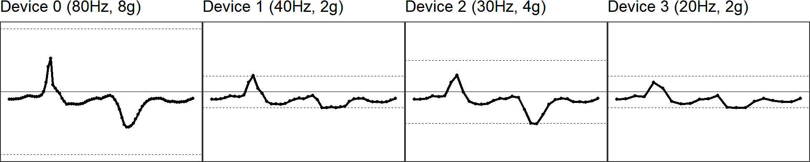
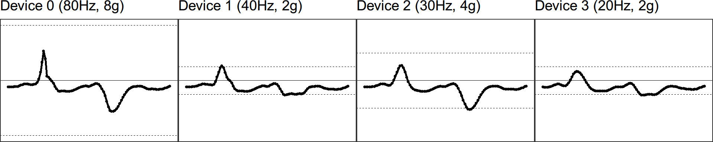
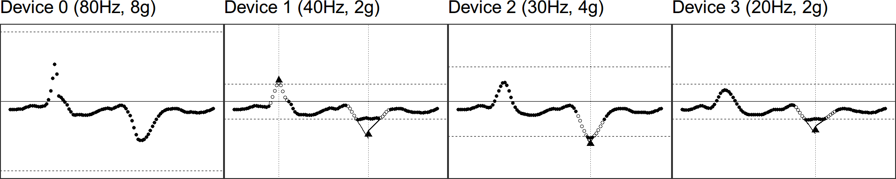

vignettes/conceptual_diagram.Rmd
conceptual_diagram.RmdHere we demonstrate the scripts used to reproduce the diagram.
We use a one-second segment of raw accelerometer signal (80 Hz, 8g) from a random subject doing jumping jack as test data. The other signals with different sampling rates and dynamic ranges are simulated via the simulated_new_data function. The step-by-step illustration has been presented as Figure 1 in the manuscript.
figs = df %>%
group_by(.data$NAME) %>%
mHealthR::mhealth.clip(start_time = start_time, stop_time = stop_time, file_type = 'sensor') %>%
group_map(
~ MIMSunit::illustrate_signal(
.x,
title = .y,
line_size = 1,
point_size = 1,
range = c(-.x$GRANGE[1], .x$GRANGE[1])
) + theme(plot.margin = unit(c(0, 0.01, -0.2, -0.2), "line"))
)
gridExtra::grid.arrange(grobs = figs, nrow = 1)
The second step is to regularize the sampling rates of the signals and upsample the signal to 100 Hz, because we have shown extrapolation (see next section) works better and more robustly at 100 Hz than lower sampling rates.
figs = interp_df %>%
group_by(.data$NAME) %>%
mHealthR::mhealth.clip(start_time = start_time,
stop_time = stop_time,
file_type = 'sensor') %>%
group_map(
~ MIMSunit::illustrate_signal(
.x,
title = .y[[1]],
line_size = 1,
point_size = 1,
range = c(-.x$GRANGE[1], .x$GRANGE[1])
) + theme(plot.margin = unit(c(0, 0.01, -0.2, -0.2), "line"))
)
gridExtra::grid.arrange(grobs = figs, nrow = 1)
The third step is to restore the samples that are maxed out due to low dynamic range for signals of intensive movement. Please check the manuscript for the details of the extrapolation algorithm.
extrapolation = function(df, name, start_time, stop_time) {
markers = MIMSunit::.extrapolate_mark("gamma")(df$HEADER_TIME_STAMP,
df$X, -df$GRANGE[1],
df$GRANGE[1],
0.03)
markers_df = data.frame(HEADER_TIME_STAMP = df$HEADER_TIME_STAMP,
X = abs(markers))
neighbors = MIMSunit::.extrapolate_neighbor(markers, 100, 0.05)
if (nrow(neighbors) > 0) {
left_indices = c()
right_indices = c()
mo_indices = c()
for (i in 1:nrow(neighbors)) {
left_indices = c(left_indices,
neighbors$left_start[i]:neighbors$left_end[i])
right_indices = c(right_indices,
neighbors$right_start[i]:neighbors$right_end[i])
mo_indices = c(mo_indices,
neighbors$left_end[i]:neighbors$right_start[i])
}
fitted_line_df = MIMSunit::.extrapolate_fitline(
df[[1]],
df[[2]],
neighbors,
markers,
0.6,
100,
0.05
)
colnames(fitted_line_df) = c('HEADER_TIME_STAMP', 'X', 'type', 'index')
left_neighbors_df = df[left_indices, ] %>%
mHealthR::mhealth.clip(start_time = start_time,
stop_time = stop_time,
"sensor") %>% data.frame
right_neighbors_df = df[right_indices, ] %>%
mHealthR::mhealth.clip(start_time = start_time,
stop_time = stop_time,
"sensor") %>% data.frame
between_neighbor_df = df[c(-left_indices, -right_indices), ] %>%
mHealthR::mhealth.clip(start_time = start_time,
stop_time = stop_time,
"sensor")%>% data.frame
between_neighbor_without_maxed_out_df = df[c(-left_indices, -right_indices, -mo_indices), ] %>%
mHealthR::mhealth.clip(start_time = start_time,
stop_time = stop_time,
"sensor") %>% data.frame
maxed_out_df = df[mo_indices, ] %>%
mHealthR::mhealth.clip(start_time = start_time,
stop_time = stop_time,
"sensor") %>% data.frame
maxed_out_df$weight = markers_df[mo_indices, 'value'] %>%
mHealthR::mhealth.clip(start_time = start_time,
stop_time = stop_time,
"sensor")
fitted_line_df = fitted_line_df %>%
mHealthR::mhealth.clip(start_time = start_time,
stop_time = stop_time,
"sensor") %>% data.frame
points_ex_df = fitted_line_df[fitted_line_df$type == 'point', c(1, 2)]
} else {
marks_df = NULL
left_neighbors_df = NULL
right_neighbors_df = NULL
maxed_out_df = NULL
between_neighbor_df = NULL
between_neighbor_without_maxed_out_df = NULL
fitted_line_df = NULL
points_ex_df = NULL
}
df = df %>%
mHealthR::mhealth.clip(start_time = start_time,
stop_time = stop_time,
"sensor") %>% data.frame
return(
list(
data.frame(df),
between_neighbor_df,
left_neighbors_df,
right_neighbors_df,
maxed_out_df,
between_neighbor_without_maxed_out_df,
markers_df,
fitted_line_df,
points_ex_df,
name[[1]]
)
)
}extrap_illustration_list = interp_df %>% group_by(.data$NAME) %>%
group_map( ~ extrapolation(
.x,
name = .y,
start_time = start_time,
stop_time = stop_time
))draw_extrapolation = function(extrap_illustration) {
df = extrap_illustration[[1]]
between_neighbors_df = extrap_illustration[[2]]
left_neighbors_df = extrap_illustration[[3]]
right_neighbors_df = extrap_illustration[[4]]
extrap_points_df = extrap_illustration[[9]]
fitted_line_df = extrap_illustration[[8]]
p = MIMSunit::illustrate_extrapolation(
df = df,
between_neighbor_df = between_neighbors_df,
title = extrap_illustration[[10]],
left_neighbors_df = left_neighbors_df,
right_neighbors_df = right_neighbors_df,
show_neighbors = TRUE,
extrap_points_df = extrap_points_df,
fitted_line_df = fitted_line_df,
show_extrapolated_points_and_lines = TRUE
) + theme(plot.margin = unit(c(0, 0.01, -0.2, -0.2), "line"))
return(p)
}
figs = lapply(extrap_illustration_list, draw_extrapolation)
gridExtra::grid.arrange(grobs = figs, nrow = 1)